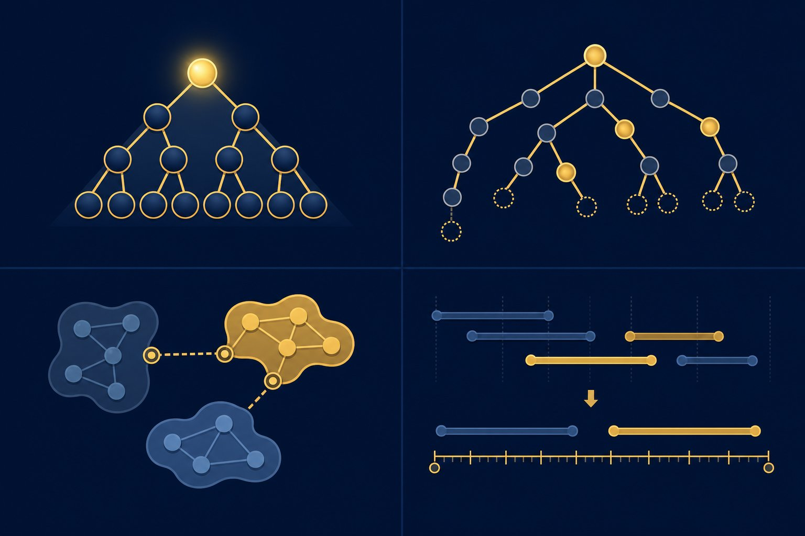

DSA III — heaps, tries, union-find
Arrays and hash maps got you through the screen; these five structures get you through the onsite — top-K streams, prefix search, connected components, merging intervals, and backtracking without tears. Same deal: pattern first, runnable Python always.

Figure 73.1 — “Top K”, “starts with”, “connected to”, “overlapping” — hear the keyword, reach for the structure.
1. Heaps & tries (order + prefixes)
import heapq
def top_k(stream, k):
h = []
for x in stream: # O(n log k), O(k) memory
heapq.heappush(h, x)
if len(h) > k:
heapq.heappop(h) # evict smallest
return sorted(h, reverse=True)
# max-heap trick: heapq is min-only, so negate
h = [-x for x in [5, 1, 9]]
heapq.heapify(h)
biggest = -heapq.heappop(h) # 9# trie: prefix search in O(len(word)) — dicts of dicts
class Trie:
def __init__(self):
self.root = {}
def insert(self, w):
node = self.root
for ch in w:
node = node.setdefault(ch, {})
node["#"] = True # end marker
def starts_with(self, prefix):
node = self.root
for ch in prefix:
if ch not in node:
return False
node = node[ch]
return True2. Union-find & intervals (connect + merge)
| Keyword you hear | Structure | Complexity |
|---|---|---|
| “Connected / same group / components” | Union-find (disjoint set + path compression) | ~O(α(n)) ≈ constant per op |
| “Overlapping / merge / meeting rooms” | Sort by start, sweep once | O(n log n) total |
| “Top K / running median” | Heap(s) | O(n log k) |
| “Prefix / autocomplete / spellcheck” | Trie | O(word length) |
# union-find: networks, clusters, Kruskal's MST, image blobs
class DSU:
def __init__(self, n):
self.p = list(range(n))
def find(self, x):
while self.p[x] != x: # path compression
self.p[x] = self.p[self.p[x]]
x = self.p[x]
return x
def union(self, a, b):
self.p[self.find(a)] = self.find(b)
def merge_intervals(iv):
iv.sort() # by start
out = [iv[0]]
for s, e in iv[1:]:
if s <= out[-1][1]: # overlap → extend
out[-1][1] = max(out[-1][1], e)
else:
out.append([s, e])
return out3. Backtracking (search with undo)
- Template: choose → explore → unchoose. Permutations, subsets, N-queens, Sudoku are all this loop with different “valid?” checks.
- Prune early: kill dead branches the moment constraints break — ordering choices well beats raw speed 100×.
- Know the cost: exponential worst case is FINE when n ≤ 20 and pruning is strong; say so out loud to show you did the math.
Interview traps
Forgetting the heap invariant after manual list surgery (use heappush/heappop, never append + hope). Trie memory blowup on huge alphabets (compress to radix form or use sorted-list + bisect for static word sets). Union-find without path compression degrading to O(n). And intervals: ALWAYS sort first — the #1 forgotten line in merge problems.
Short notes
Heaps: top-K/median via heapq (negate for max); tries: prefix search in O(word). Union-find: connectivity in ~constant time with path compression; intervals: sort by start, sweep-merge. Backtracking: choose/explore/unchoose + prune early. Keywords map to structures: top-K → heap, prefix → trie, connected → DSU, overlap → sort+sweep.
Point notes
- Top-K = bounded heap.
- Prefix = trie.
- Connected = union-find.
- Overlap = sort + sweep.
- Backtrack = choose, undo.
MCQs
5 questions1. Top-K from a stream of n items, minimal memory:
2. Autocomplete (“all words starting with ‘pre’”) is a textbook case for:
3. Union-find with path compression gives per-operation cost ≈:
4. The mandatory first step of every merge-intervals solution:
5. Python max-heap via heapq is done by:
Practice questions
P1. Running median of a stream. Design it and state per-item cost.
Two heaps: max-heap (negated) for the lower half, min-heap for the upper half; keep sizes within 1; median is a top (or average of tops). Per item: O(log n) push/pop + rebalance; query O(1). Mention the invariant out loud — interviewers grade the invariant, not the code.
P2. 10M user pairs “A knows B” — find everyone connected to user X. Approach + complexity.
Union-find: union all pairs (~O(α(n)) each, near-linear total), then everyone with find(u) == find(X). Beats BFS-per-query when queries repeat; memory O(users). If edges arrive online and queries interleave, DSU handles both incrementally — say that, it’s the senior-level observation.
P3. N-queens: sketch backtracking with pruning, and bound the practical n.
Place row by row; track used columns + two diagonal sets (r+c, r−c); skip attacked cells (prune); recurse; remove on backtrack. Cost exponential worst-case but heavily pruned — n ≤ 12–14 instant, n = 20+ needs symmetry breaking or ILP. State the bound: “fine for interview n, and here’s where it breaks.”